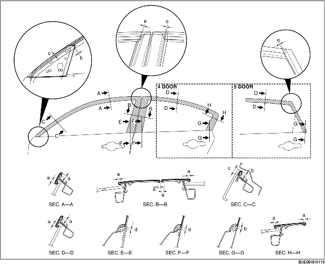

1. Remove any grease or dirt from the affixing surface of the door.
2. Cut away the unused portion along the dotted lines.
3. Peel off the backing paper and attach the door sash film onto the door as shown in the figure.

4. Peel off the transparent protective film on the door sash film.